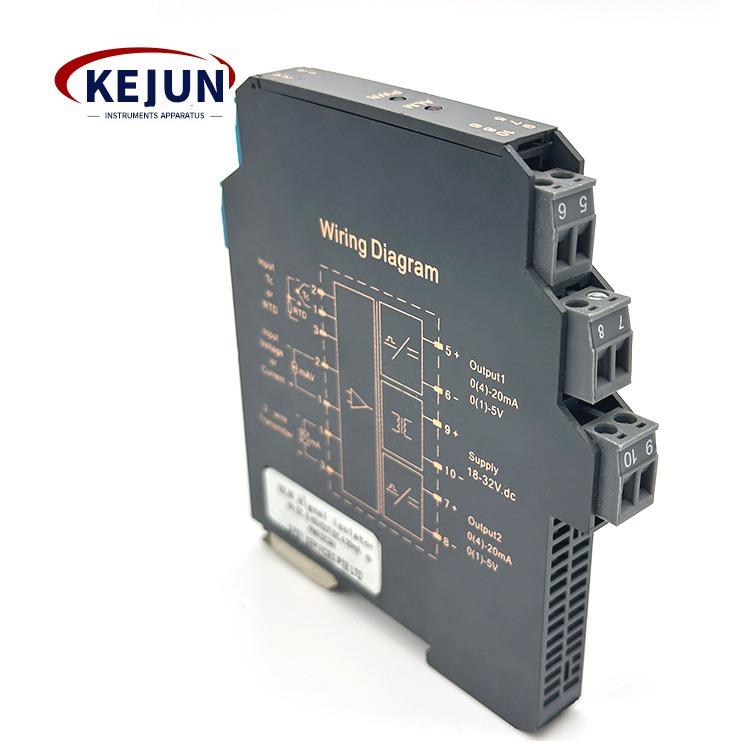

18–32 VDC supply; DIN-rail mounting; electromagnetic isolation; current/voltage signal conversion.

The wording and values above are derived from the supplied product manual. Where the manual is ambiguous or model-specific, the live product datasheet should be used as the final technical reference.